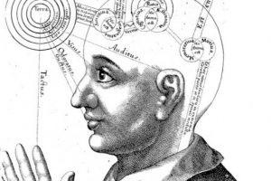

Religion Within Reason. Cahn, Steven M. New York: Columbia University Press, 2017. ISBN: 9780231181617. Paperback. 93 pages.
It is amazing that a book of less than 100 pages can be simultaneously so brief and so repetitive. The average chapter length of this book is only six pages, in which enormous concepts such as the existence of God, the problem of evil, and faith are treated neither substantively nor charitably. The greatest virtue of this book is that it is short.
In the preface Cahn clearly states his objective: “I seek to provide an accessible and, I hope, provocative overview of the sort of challenges philosophy presents to any version of supernatural belief, while also exploring the possibility of religion within a naturalistic framework” (ix). He also identifies his intended audience – those who do not believe that any religion is capable of not violating “the methods and results of scientific inquiry”, and offers a brief list of his sources. However, Cahn’s oversimplified account of theistic belief undermines his explanation of the ways in which philosophy challenges such beliefs.
In the first six pages, Cahn attempts to explain and debunk the cosmological, ontological, and teleological arguments for the existence of God. Any one of these arguments could easily be worth a chapter alone. Cahn chooses here, as he does several times throughout Religion Within Reason, to opt for breadth as opposed to depth. He concludes the chapter by admitting that these arguments “might be rendered more plausible” (6) than he suggested, but in lieu of addressing them more fully or fairly he would rather ask a different question.
In refusing to engage in a fair-minded way with the material he presents, Cahn sets up thousands of years of philosophical and theological arguments concerning the nature of the divine as straw men to be ripped to shreds on a moment’s notice.
The first chapter relies on a problematic definition of God that Cahn invokes throughout the book. “Let us adopt the more usual view, common to many religious believers, that ‘God’ refers to an all-good, all-powerful, all-knowing, everlasting creator of the world” (1). This understanding of God is only “more usual”, as Cahn calls it, in an exclusively Western setting.
In defining “God” in such terms he ignores all polytheistic religions, as well as any religions in which their deity is either morally imperfect, limited in power, finite in knowledge, or does not claim credit for the creation of the world. Satanism, Zoroastrianism, and Jainism, as examples, come immediately to mind.
While it is more than acceptable to limit the scope of such a book project, Cahn says in his preface that he wants to discuss how philosophy challenges any version of supernatural belief. That is impossible as he confines himself to predominantly Eurocentric subject matter. In chapter fifteen he does reference some non-Western religions, but only to make the the astounding claim that when it comes to the religions of the world in their kaleidoscopic multiplicity, some have been “good” and some have been “bad”.
In chapter two Cahn explains the ways in which philosophical proofs for the existence of God have little to do with religion itself. Cahn takes four pages to say that since only a personal experience of the divine can be counted credible, proofs for the existence of God at best confirm what was already known and, at worst, are considered worthless in light of personal experience.
What initially seemed to be an interesting defense of religious exceptions to the assertions of philosophical reason turn out to be instead a mere rehashing of the relativity of belief. The relativity of religious contentions is a theme on which Cahn harps throughout the next four chapters. Chapters three to six all essentially echo the same sentiment which can easily be summed up in one sentence: “Hypotheses/Philosophies/Theologies which can neither be proven nor disproven are bad”.
In chapter three Cahn discusses the problem of evil. The problem of evil derives from the question of how an omnipotent, omnipresent God can exist when evil also exists. Cahn whips up several solutions to the problem, then summarily dismisses them, before landing on John Hick’s solution, which distinguishes between moral and physical evil. Moral evil, according to Cahn, is the result of free will, but physical evil offers human beings the blessed opportunity to improve their pitiful moral standing.
In chapter four Cahn turns Hick’s negative theology on its head, setting forth what he calls the “problem of goodness”. If one can justify an all-good, all-powerful God in a world crawling with evil, an all-evil, all-powerful demon in a world that contains good is just as plausible a hypothesis. What was perhaps intended as clever argumentation reads as snark, and John Hick’s theology is unnecessary to make this point.

Cahn’s fifth chapter entitled “The Moriarty Hypothesis“ is a fanciful reimagining of the “problem of goodness” (which, again, is simply the inverse of the problem of evil), wherein the demon empowers Moriarity, the fictional villain from the Sherlock Holmes novels, to be the world’s greatest evil. This chapter oddly insists that theists by nature are always prone to judge harshly those who harbor doubts in the midst of their faith, and that “the more tenaciously we cling to belief, the less important is its content” (21).
It is clear that Cahn conflates all theists with evangelical Christians of the garden variety. Perhaps he has not heard of Paul Tillich or N.T. Wright. Regardless, while evangelicals often do indeed attack those who doubt as Cahn describes, other theistic systems (think bhakti Hinduism), especially those in which there is a pantheon of gods from which to choose, are perfectly able to tolerate uncertainty.
In chapter six Cahn offers another iteration of his criticism of the problem of evil, which he calls the “dummy hypothesis”. Cahn posits a world in which the hypothetical God and demon are equals in the struggle for power. When something good happens, God has won. When something bad happens, the demon has gotten the upper hand. The problem with the dummy hypothesis, and the Moriarty hypothesis, and the problem of goodness, and the problem of evil, Cahn explains, is that they are all relative. Hypotheses need to be demonstrably true or false, or they all become “dummy hypotheses”.
Chapters three through six serve as an overture to chapter seven, where Cahn grinds his axe at the apex of his argument. Seemingly ignorant of thinkers such as Friedrich Schleiermacher and Francis Schaefer, who advocate for the role of rationality in religious faith, Cahn says, “To have faith is to put aside any doubts…” (26). He differentiates between wise and foolish faith, but treats all faith as a security blanket for the uncritical mind eventually concluding that “faith of any sort opens the doors to intolerance” (29). Yea, of course, like Gandhi, Mother Teresa, Martin Luther King, Saint Francis…?
Ironically, in chapter eight Cahn turns to the Book of Job. Cahn reads Job as a critique of uncritical theology. In fact, he proposes that from Job “the more we know of God’s intentions the less they justify God’s actions” (30) and that “the book of Job does not justify God’s ways; rather, it doubts God’s goodness” (35).
Cahn’s chief argument in this chapter is that doubting God is the entire purpose of Job, and later thinkers attempted to twist the tale into something more pious and palatable. If what Cahn says is true, however, it directly conflicts with Religion Within Reason’s attempt to undermine theism. If the book of Job originally intended to encourage a critical examination of God, it would indeed align with reason without abandoning a theistic position.
Chapter nine, or “The Theodicy Trap”, deals yet again with a concern for the relativity of religion, suggesting a successful theodicy needs to explain how God can be all good and all powerful when bad things happen to people who don’t deserve them.
Chapter ten, “The Problem of Meaning”, deals with issues surrounding the claim that one “knows the will of God” or “knows God”. This chapter asks how we can know an incomprehensible God, but that’s about it.
 Chapter eleven discusses miracles, which Cahn defines as “an act of God that suspends the laws of nature” (45). The example he uses is that if a bridge collapses and one guy is thrown clear and unharmed, it is a miracle… except for those who died. The four pages of this chapter essentially boil down to “theists believe in miracles; but if God does good things, who is responsible for bad things?”
Chapter eleven discusses miracles, which Cahn defines as “an act of God that suspends the laws of nature” (45). The example he uses is that if a bridge collapses and one guy is thrown clear and unharmed, it is a miracle… except for those who died. The four pages of this chapter essentially boil down to “theists believe in miracles; but if God does good things, who is responsible for bad things?”
This point, while fair, harkens back yet again to chapters three through six and nine and ten. Religion/faith/the miraculous etc. (as framed by an understanding God in a Western context as applicable to any religion) has a supernatural element that is suspect for rational observers. Chapters three to six and nine to eleven add up to 28 pages, just shy of a third of the book. Had these chapters been condensed, perhaps Cahn could have found room to “render more plausible” the arguments he thought he was deconstructing; or perhaps the book could have been made into a pamphlet instead and saved a tree or two.
Chapter twelve gives us a two-and-a-half page stick figure drawing of deism. Chapter thirteen informs us what the majority of Western philosophy has known for hundreds of years, namely, that Pascal’s wager doesn’t work. Chapter fourteen puzzles all about why in the world people worship.
Cahn defines worship as “more than to revere, for in worshipping we depreciate ourselves and exalt another beyond challenge” (58). Where this formulation comes from is unclear. This view of worship meshes with his understanding of faith as inherently uncritical. Yet, he turns to Abraham as an example of what interaction with God should look like.
Cahn uses the example of Abraham bargaining with God to save Sodom from a fire-and-brimstone destruction. God, as we recall, wishes to destroy Sodom for its wickedness, and Abraham begs God not to. Abraham asks that God reconsider. In doing do, Cahn believes that Abraham is not being “worshipful”.
Yet the faith of Abraham is revered in Judaism, Christianity, and Islam alike. Abraham is, in fact, the individual who institutes the tithe, considered an important act of worship in all three Abrahamic faiths. The Tanakh contains many stories of people questioning and testing God, and in a good number of those instances those who do so (such as Gideon and Jacob) are rewarded. The object of worship is not beyond questioning in any of these examples.
Chapter fifteen contrasts Christianity and Jainism in an attempt to prove that religions are neither good nor evil as they have, in fact, been both at various points throughout history. This is the only place in which non-Abrahamic theism is addressed at any length, and the conclusion of religion’s moral neutrality does nothing to debunk theism of any ilk. That good people will use religion for good and evil people will use it for evil is not particularly revelatory or earth-shattering for anyone other than Cahn.
In chapter sixteen he finally offers his decisive solution to his contrived quarrel with theism. His answer? Religion without God, of course. Cahn suggests that atheists and agnostics can be religious by participating in ritual, prayer, metaphysical belief, and moral commitment. This is the “religion within reason” after which the book is titled. Where Cahn (mis)defines terminology such as “God”, “faith”, and “worship” throughout Religion Within Reason, he never defines religion itself. This is as close as he gets to expounding on his understanding of religion.
Chapter seventeen is an odd foray into heaven and hell. Cahn suggests divine justice as one of the major appeals of theism, citing the benefit of heaven as compensation for a life well lived, then goes on to tear down this profile. Cahn suggest that heaven will lack certain amenities we might be counting on i.e. no baseball for professional baseball players, having to spend eternity with people you hated while alive.
Perhaps as a “non-believer,” Cahn was briefed on what heaven is really like during a long conversation one evening over jello shots with Morgan Freeman. He asks questions about what our bodies would look like, what souls are, etc. and again cops out of seeking a genuine answer to them by concluding that “speculating about such obscure matters does not provide a reliable foundation for theism” (80), which no one aside from Cahn ever claimed that it did.
Chapter eighteen assures the agnostic and/or atheist that a life without God still has meaning and in no way precludes them being kind and loving… which doesn’t need said.
The final pages of the book are solely dedicated to quoting I. L. Peretz’s tale If Not Higher in full. Cahn concludes with a tale of a man who becomes a disciple of a rabbi because of the moral way in which he lives, not the theologies he espouses, in an attempt to convince his readers that to do so is desirable. Consistently, the most interesting statements in Religion Within Reason are the places in which Cahn quotes other people.
The largest drawback to Religion Within Reason is that it answers questions no one is asking. The suggestion that atheists can be religious without being theistic is not, in any sense, new. It adds little of value to current academic discourse in the philosophy of religion, and serves not even as an elementary sort of primer on the theological and philosophical concepts it routinely references.
But, as we’ve emphasized, you can certainly get through it before you might possibly decide it’s really not worth reading.
Rebekah Gordon is the book review editor for Religious Theory. She has academic interests, among various topics, in semiotics and affect theory.